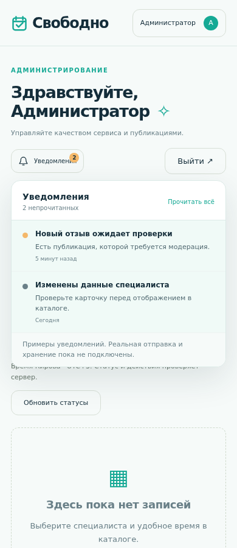
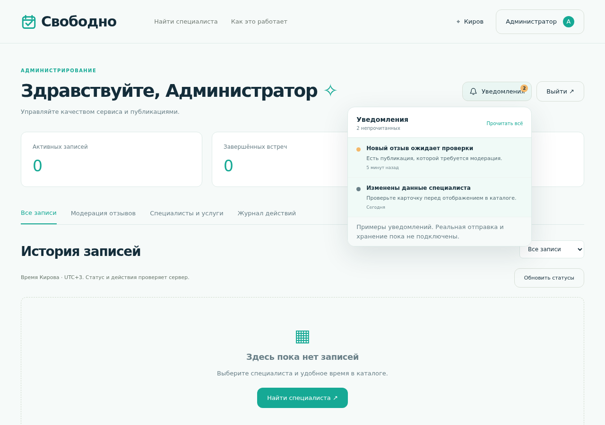
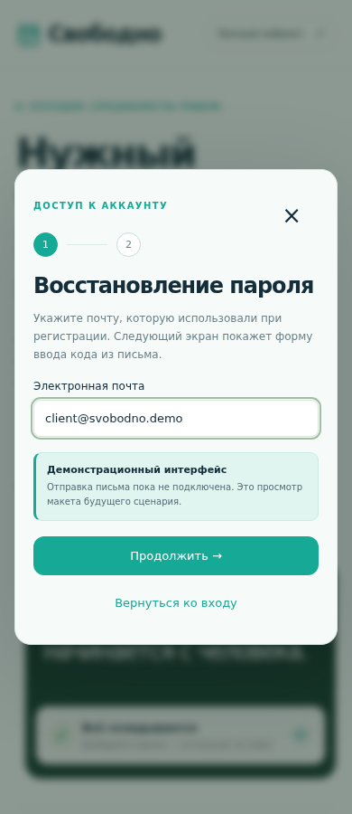
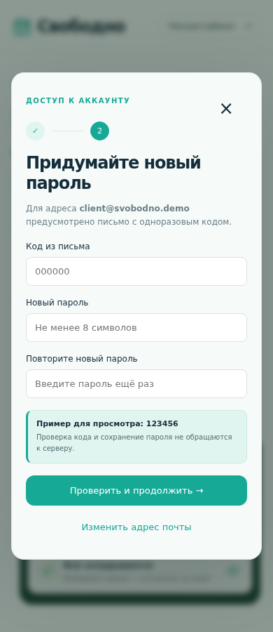
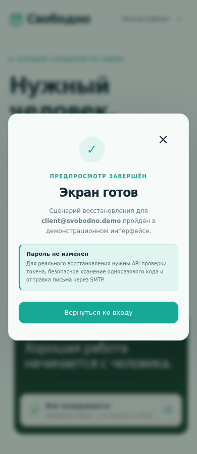
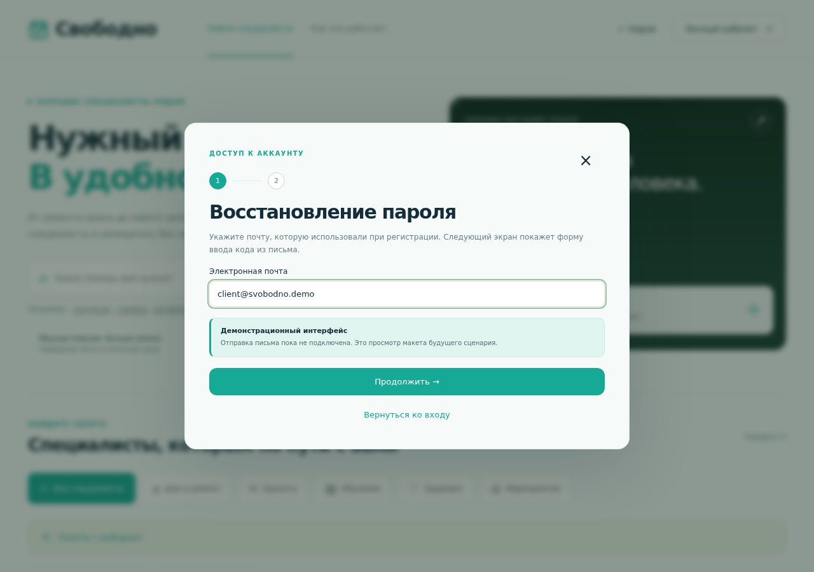
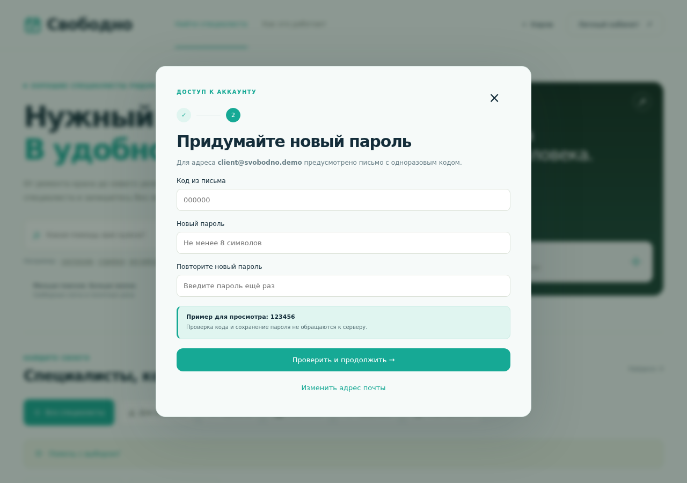
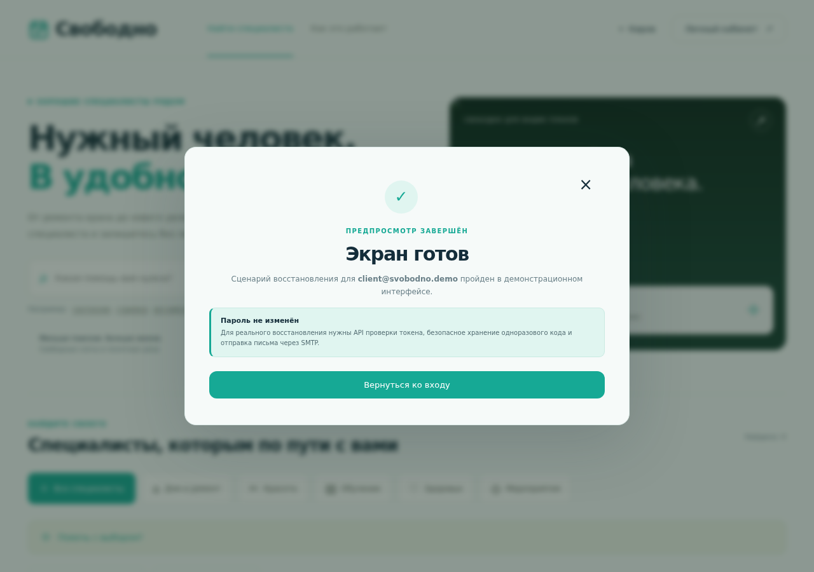
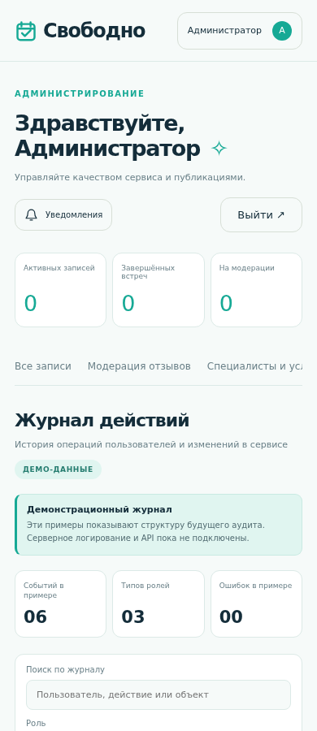
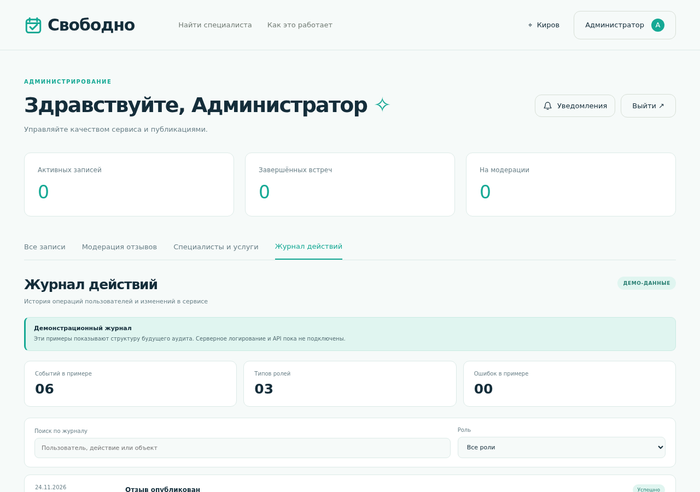

Изображения сняты с работающих HTML/CSS-экранов в Chromium. API для отправки/хранения уведомлений, сброса пароля и серверного аудита в исходном проекте отсутствуют; поэтому эти функции помечены как демонстрационные внутри самого интерфейса.
Интерфейс уведомлений
Индикатор непрочитанных событий, выпадающий список, отметка прочитанного и разные сообщения для клиента, специалиста и администратора.




Восстановление пароля
Сценарий из трёх частей: запрос письма, ввод одноразового кода и нового пароля, завершение демонстрации.












Журнал действий администратора
Демонстрационные события, сводка, поиск и фильтр по роли. Проверена фильтрация по роли «Клиент» и поиск по имени.




Адаптивность и материалы сдачи
Новые экраны проверены на ширинах 390 и 1280 px. Подготовлено 10 PNG-скриншотов; каждый можно открыть в исходном размере нажатием на изображение.